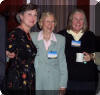

|
|
SF Bay Area Rice Alumni Group |
|
News
|
upcoming events ...
OWLS ARE ONE WIN FROM THE CHAMPIONSHIP!
Game 1 Saturday, June 21st, 2003, 4 PM
(Rice
wins in 10 innings 4-3) Cheer on the Owls as they face-off in the finals of the College World Series Championship (best of three) against the Stanford Cardinals. The Owls will also be trying to earn the University its first national major sports championship. Rice stayed undefeated as they beat, defending Champions, Texas 5-4 on Wednesday to make it into the finals while Stanford advanced as they won 7-5 against Cal State Fullerton on Thursday. If you can't make it out to any of the games, they are being broadcast on ESPN at the times listed above. Night at the American Conservatory Theater in SF
Here are some of the fabulous national reviews of the musical Urinetown: "Better than The Producers! the
sell-out hit that aims for comic heights and keeps the audience soaring."
Date
Saturday, August 2, time TBA Come join us this summer for our third annual Alumni Family Picnic in the Bay Area. This is our most successful event of the year and should not to be missed! In addition to welcoming entering freshmen, this picnic has proven to be a great opportunity for alumni parents, spouses, kids and friends to catch up with each other. Of course there will be plenty of fun, food and delicious side dishes. For those of you who missed it, two years ago, we were at Tilden Park in Berkeley and last year we were at Coyote Point Park in San Mateo. Well over 150 people showed up for both picnics. This year's picnic is at Golden Gate Park. If you have any questions, please contact esandler@rice.edu. it's a wrap ... Bay Area Presidential Visit by Dr. Gillis Over 150 Bay Area Rice alumni attended the reception for Dr. Gillis at the Clift Hotel in San Francisco (June 4, 2003). Dr. Gillis spoke about current developments at Rice, including the opening of the Jones Graduate School of Management's new building, the addition of Martel College and the expansions of Jones and Brown Colleges, and the plans for a Humanities Corridor which includes renovations of Herring and Rayzor Halls and the newly-constructed Humanities Building next to Fondren Library.
Dr. Gillis then took questions about Rice student and faculty achievements and graduate student programs before introducing Distinguished Alumna Jane Evans ('46). Mrs. Evans has been a pioneer in Silicon Valley, as the first woman to graduate in engineering from Santa Clara University and the first woman engineer to be hired by Hewlett-Packard.
Trustee Teveia Barnes ('75) closed the program by thanking Dr. Gillis for his decade-plus of contributions to the university as he prepares to step down from the presidency at the end of the 2003-04 academic year. Ms. Barnes also reminded alumni of the upcoming "Urinetown" event with the American Conservatory Theater on July 2 (see above).
Jane Evans '46 (center) receives congratulations from Kathleen Much '63 (left) and Julia Baskett '67 (right) during coffee and dessert. |


 Music and lyrics by Mark Hollmann
Music and lyrics by Mark Hollmann
{kind=link}